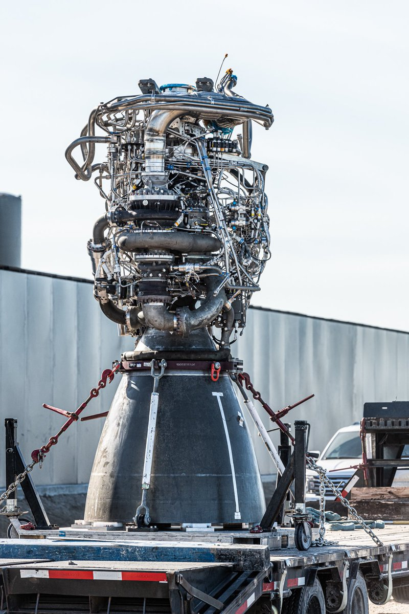
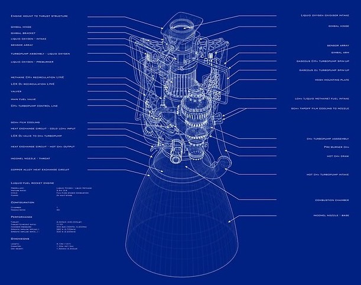

Raptor is een familie van full-flow raketmotoren met gefaseerde verbrandingscyclus, ontwikkeld en
vervaardigd door SpaceX voor gebruik op het in ontwikkeling zijnde SpaceX Starship. De motor wordt aangedreven door "methalox" (cryogeen vloeibaar methaan en LOX) in plaats
van de "kerolox" (RP-1 kerosine en LOX) die werd gebruikt in de eerdere Merlin- en Kestrel-raketmotoren van SpaceX.
De Raptor-motor heeft meer dan twee keer de stuwkracht van SpaceX's Merlin 1D-motor die de Falcon 9- en Falcon Heavy-lanceervoertuigen aandrijft.
Raptor wordt gebruikt in het Starship-systeem in zowel de super-heavy-lift, Super Heavy-booster en in het ruimtevaartuig Starship.
De eerste ontwikkelingstesten van Raptor-methaanmotorcomponenten werden uitgevoerd in het Stennis Space Center van NASA, waar SpaceX apparatuur aan de bestaande infrastructuur toevoegde om het testen van vloeibare methaanmotoren te ondersteunen. De ontwikkeling van de Raptor-motor die in oktober 2013 werd besproken, is ontworpen om meer dan 2.900 kN (661.000 lbf) vacuüm stuwkracht te genereren. Het testen van Raptor-motoronderdelen begon in mei 2014 in het E-2-testcomplex dat door SpaceX werd aangepast om tests met methaanmotoren te ondersteunen.
placeholder